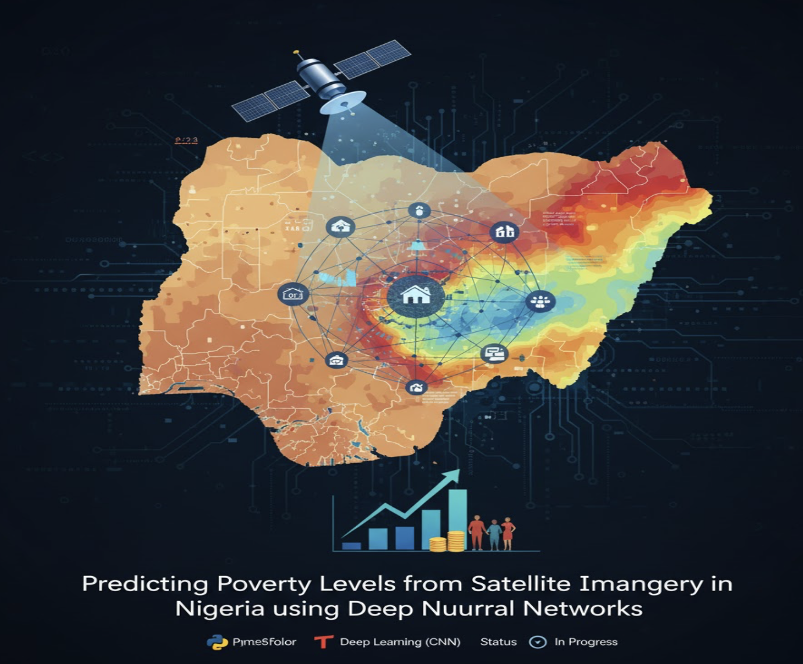

Project Overview
This project tackles one of development economics' most challenging problems: measuring poverty at scale in data-scarce environments. Using satellite imagery of Nigerian localities and CNN-based transfer learning, the model predicts local poverty levels without requiring traditional survey data — a scalable approach with transformative implications for international development.
Motivation
Traditional poverty measurement relies on household surveys — expensive, infrequent (every 3–5 years), and geographically limited. Satellite imagery provides continuous, comprehensive Earth coverage. Night-time lights, building density, road networks, and vegetation patterns visible from space are strong proxies for economic activity and living standards.
Data
- Satellite imagery: High-resolution daytime imagery of Nigerian localities from public satellite sources.
- Ground truth: Survey-based poverty estimates for calibration and model validation.
- Spatial data: Administrative boundaries processed with GeoPandas for geographic aggregation and mapping.
Model Architecture: Transfer Learning
Three pre-trained CNN architectures were fine-tuned on the satellite imagery dataset:
- VGG16: Deep network with small convolution filters; strong baseline for texture-based feature extraction.
- ResNet50: Residual connections enabling deep feature learning without vanishing gradients.
- InceptionV3: Multi-scale convolutions capturing features at different spatial resolutions — particularly useful for satellite imagery with diverse spatial patterns.
All models use ImageNet pre-trained weights with final classification layers replaced and fine-tuned for the poverty prediction regression task.
Transfer learning dramatically accelerates convergence and improves performance on the limited satellite imagery dataset. Pre-trained CNNs leverage rich visual features from millions of images, adapted to identify poverty-correlated visual patterns in Nigerian localities.

Key Contributions
- Demonstrated that satellite imagery + transfer learning can reliably predict local poverty levels in Nigeria.
- Compared three state-of-the-art CNN architectures (VGG16, ResNet50, InceptionV3) for this domain-specific task.
- Produced actionable poverty maps enabling targeted policy interventions without costly new surveys.
- Bridges deep learning and development economics — illustrating the potential of AI for social impact at scale.